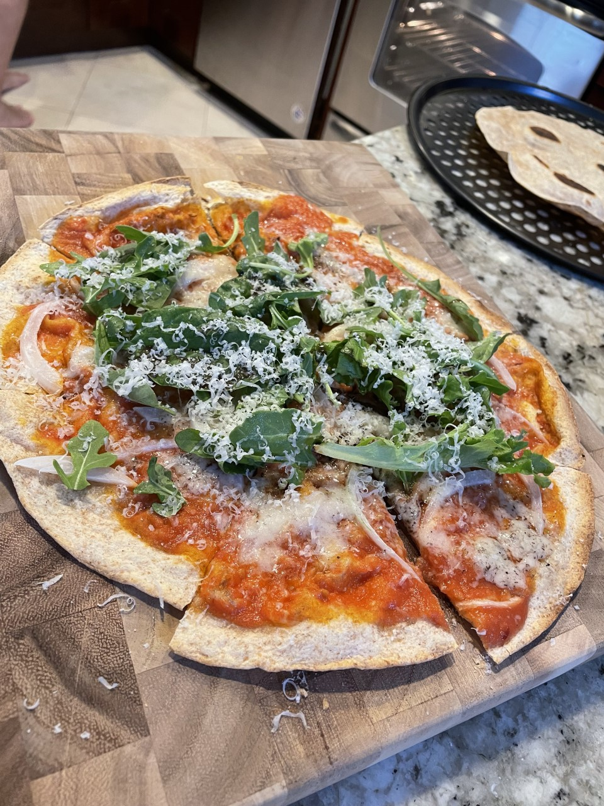

Wholewheat Wrap Pizza

Description
This is an extremely easy/fast way to repare a delicious pizza that is light enough to be a snack, serves well as an appetizer, or is so good that it can be devoured alone!
Ingredients:
- 1 large wholewheat wrap
- 1/2 tin tomatoes, chopped
- 1 tbsp tomato paste
- 1 garlic clove, chopped
- 1 white onion, thinly sliced
- Parmesan cheese and truffle cheese, grated
- Arulgua
- 2 tbsp balsamic vinegar
- 1 tbsp extra virgin olive oil
Method:
- Preheat the oven to 500°F
- Place the wholewheat wrap on a screaming pan, 1 minute each side
- Make the pasta sauce, fry the garlic in some olive oil, salt and pepper. Add the chopped tomatoes, tomato paste, some water and reduce.
- Add the pizza sauce, white onions and truffle cheese to the wrap and place in the oven.
- Once cooked, add the arugula, grated parmesan cheese and a drizzle of balsamic vinegar.